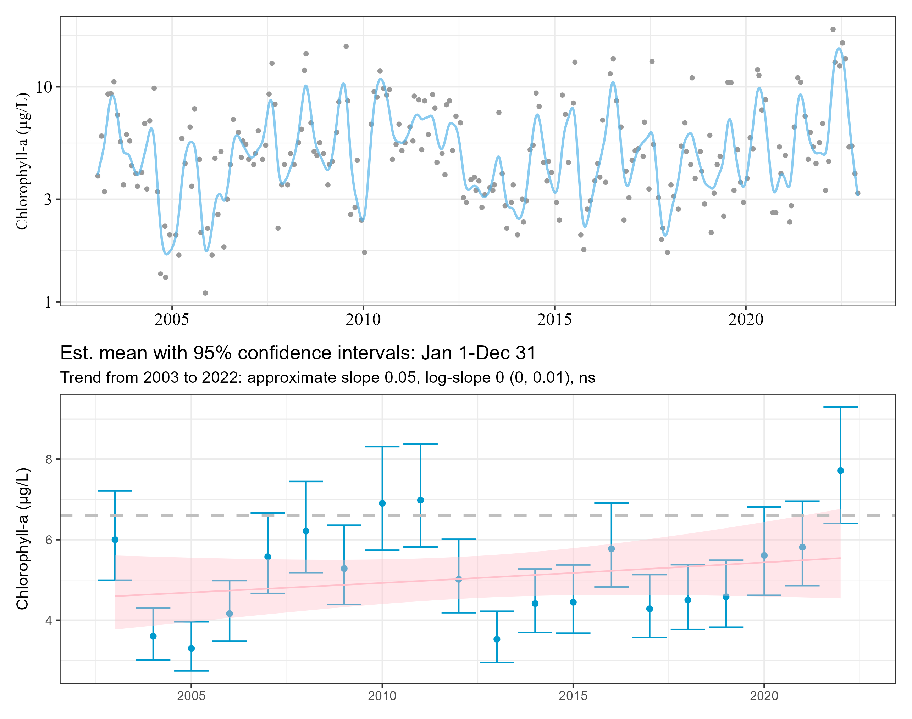
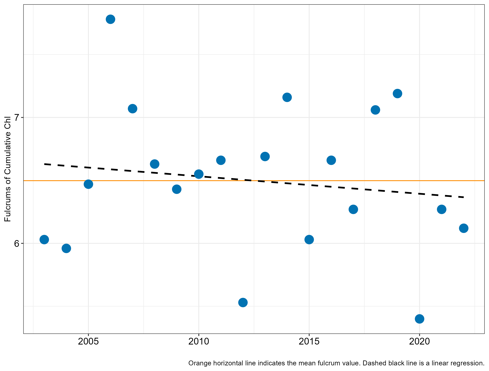

Trends and variability in chlorophyll a in the GTM estuary
SDK
Summary
Background
This analysis was conducted using long-term, continuous monitoring data from two programs in the Guana Tolomato Matanzas (GTM) estuary:
- GTM National Estuarine Research Reserve’s System-Wide Monitoring Program (SWMP) (n=4)
- St. Johns River Water Management District (n=3)
Using 20-year time period between January 2003 - December 2022 of monthly chlorophyll-a grab samples.
Station Locations
Summary of data preparation
QAQC’d all chlorophyll station data
R/misc/gtmnerr-swmp-chla-prep.qmd for all the GTMNERR data prep
- Kept only “grab” data (removed ISCO from complete dataset)
- Removed rejected, suspect, and below sensor limit flagged data
- Replaced values below the nominal base MDL of 0.55 (\(\mu\)g/L) with the nominal base
QAQC’d all chlorophyll station data
R/misc/gtmnerr-swmp-chla-prep.qmd for all the GTMNERR data prep
- Averaged all duplicate grab samples into monthly average
- For Pellicer Creek, used ISCO data collected at similar timeframes to fill in missing gaps with grab data.
QAQC’d all chlorophyll station data
Removed suspect flags from SJRWMD data and prepped (R/misc/sjr_dat.R)
Combined GTMNERR and SJRWMD data into one dataframe (R/misc/combine-files.R) and got it into format for modeling.
Data Distribution

Data Analysis
- trend analysis using generalized additive models with mixed-effects meta analysis (M. W. Beck et al. 2022)
- decomposition of timeseries for patterns and scales of variability (Cloern and Jassby 2010)
- calculations of fulcrums for seasonality (Cloern et al. 2023)
- breakpoints for events of interest (Phlips et al. 2021)
Trend Analysis
The
wqtrendspackage was used to fit a generalized additive model on the log10-transformed chl-a for each station.Diagnostic information of the model fit and procedure were checked using the
mgcvpackage.Models and diagnostics were created in
R/misc/02_models.Rand all models and diagnostic figures stored in.../output/models
Model Fit
Combined summary information on model fit:
| station | AIC | GCV | R2 |
|---|---|---|---|
| GTMPINUT | -185.3 | 0.031 | 0.63 |
| JXTR17 | -135.9 | 0.034 | 0.41 |
| GTMSSNUT | -236.7 | 0.024 | 0.62 |
| JXTR21 | -177.8 | 0.029 | 0.61 |
| GTMFMNUT | -243.4 | 0.027 | 0.76 |
| MRT | -96.5 | 0.041 | 0.49 |
| GTMPCNUT | 55.9 | 0.084 | 0.58 |
Model Fit
Combined summary information on model fit:
| station | smoother | edf | Ref.df | F | p.value |
|---|---|---|---|---|---|
| GTMPINUT | s(cont_year) | 83.33 | 103.25 | 4.14 | 0.0e+00 |
| JXTR17 | s(cont_year) | 58.13 | 72.31 | 2.32 | 5.5e-06 |
| GTMSSNUT | s(cont_year) | 76.29 | 94.69 | 4.25 | 0.0e+00 |
| JXTR21 | s(cont_year) | 67.77 | 84.00 | 4.09 | 0.0e+00 |
| GTMFMNUT | s(cont_year) | 102.87 | 126.69 | 6.19 | 0.0e+00 |
| MRT | s(cont_year) | 62.83 | 78.02 | 2.84 | 0.0e+00 |
| GTMPCNUT | s(cont_year) | 72.59 | 90.11 | 3.82 | 0.0e+00 |
GAM Plots and Trend Analysis
- A meta-analysis regression model was applied to test annual (Jan 1 - Dec 31) trends in four distinctive time periods for each site:
- the entire 20-year record
- first 10 years
- second 10 years
- the last 5 years
- Using the models, figures were created to plot predictions for GAMs over the chl-a time series for each station.
GTMPINUT
GTMPINUT

JXTR17

JXTR17

GTMSSNUT

GTMSSNUT

JXTR21

JXTR21

GTMFMNUT

GTMFMNUT

MRT

MRT

GTMPCNUT

GTMPCNUT

Annual Trend Summaries
Slopes for trend analysis for four timeframes (*<0.05, **<0.01, ***<0.001)
| Trend Timeframe | GTMPINUT | JXTR17 | GTMSSNUT | JXTR21 | GTMFMNUT | MRT | GTMPCNUT |
|---|---|---|---|---|---|---|---|
| 20 years | 0.05 | -0.04 | 0.09* | -0.02 | 0.088** | 0.04 | 0.11 |
| First 10 years | 0.24 | 0.00 | 0.26* | 0.03 | 0.23** | 0.1 | 1.14** |
| Second 10 years | 0.29*** | 0.11 | 0.19* | -0.06 | 0.13* | -0.12* | 0.15 |
| Last 5 years | 0.73*** | -0.25 | 0.17 | -0.25** | 0.06 | -0.31* | 0.42 |
Annual Trend Summaries
Log10 slopes (+/- 95% confidence interval) for trend analysis for four timeframes (*<0.05, **<0.01, ***<0.001)
| Trend Timeframe | GTMPINUT | JXTR17 | GTMSSNUT | JXTR21 | GTMFMNUT | MRT | GTMPCNUT |
|---|---|---|---|---|---|---|---|
| 20 years | 0 (0,0.01) | 0 (-0.01, 0) | 0.01 (0, 0.02)* | 0 (-0.01, 0) | 0.01 (0, 0.02)** | 0 (0, 0.01) | 0.01 (-0.01, 0.02) |
| First 10 years | 0.02 (0, 0.04) | 0 (-0.01, 0.01) | 0.03 (0,0.05)* | 0 (-0.01, 0) | 0.03 (0.01, 0.05)** | 0.01 (0, 0.02) | 0.06 (0.03, 0.1)** |
| Second 10 years | 0.02 (0.01,0.04)*** | 0.01 (0, 0.02) | 0.02 (0, 0.03)* | -0.01 (-0.02, 0) | 0.02 (0, 0.03)* | -0.01 (-0.02, 0)* | 0.01 (-0.01, 0.03) |
| Last 5 years | 0.06 (0.03, 0.08)*** | -0.02 (-0.05, 0.01) | 0.01 (-0.02, 0.05) | -0.04 (-0.07, -0.01)** | 0.01 (-0.02, 0.03) | -0.03 (-0.06, 0)* | 0.03 (-0.03, 0.08) |
Patterns and scales of variability
Variability and patterns in the monthly chl-a were extracted by decomposing the time series at each station into an annual effect, mean seasonal pattern, and residual “events”.
Missing monthly data values for all stations were filled using the averaged predicted day of the year values from the generalized additive models (
R/misc/missing-data.qmd)
Equation from Cloern and Jassby (2010)
Equation 4:
\[ c_{ij}=Cy_im_j\epsilon_{ij} \] Where \(c_{ij}\) is chlorophyll concentration in year \(i\)(\(i=1,...,N\)) and month \(j\)(\(j=1,...12\)); C is the long-term mean of the series; \(y_i\) is the annual effect in the ith year; \(m_j\) is the seasonal (monthly) effect in the jth month; and \(\epsilon_{ij}\) is the residual.
- If \(y_i\) >1, indicates a year with above-average mean Chl-a.
- If \(m_j\) >1, indicates a mean monthly Chl-a greater than the annual mean.
- If \(\epsilon_{ij}\) >1, indicates an observation greater than the expected value for that month and year.
GTMPINUT
JXTR17

GTMSSNUT
JXTR21

GTMFMNUT
MRT

GTMPCNUT
Coefficients of variation
| Station | Annual | Seasonal | Residual |
|---|---|---|---|
| GTMPINUT | 0.23 | 0.34 | 0.35 |
| JXTR17 | 0.15 | 0.27 | 0.34 |
| GTMSSNUT | 0.23 | 0.22 | 0.34 |
| JXTR21 | 0.14 | 0.37 | 0.31 |
| GTMFMNUT | 0.24 | 0.33 | 0.41 |
| MRT | 0.18 | 0.35 | 0.45 |
| GTMPCNUT | 0.35 | 0.41 | 0.51 |
Seasonality
Measured changes in phases of annual chl-a cycles using
wqlpackage.Used
phenoPhase()to calculate the fulcrum or “center of gravity” as the date each year in months when the cumulative chl-a reached half the total annual cumulative chl-a. This was used as an indicator of peak annual biomass.This is a common index of plankton phenology (Greve et al. 2005)
GTMPINUT
JXTR17

GTMSSNUT
JXTR21

GTMFMNUT
MRT

GTMPCNUT
Seasonal Trends
- A meta-analysis regression model was applied to test seasonal (spring:summer Jan 1 - Jun 30; summer:fall Jul 1 - Dec 31) trends in four distinctive time periods for each site:
- the entire 20-year record
- First 10 years
- Second 10 years
- Last 5 years
GTMPINUT

GTMPINUT

JXTR17

JXTR17

GTMSSNUT

GTMSSNUT

JXTR21

JXTR21

GTMFMNUT

GTMFMNUT

MRT

MRT

GTMPCNUT

GTMPCNUT

Seasonal Trends based on peak season
- A meta-analysis regression model was applied to test seasonal for trends in peak seasonal biomass (May - Aug) in four distinctive time periods for each site:
- the entire 20-year record
- First 10 years
- Second 10 years
- Last 5 years
GTMPINUT

JXTR17

GTMSSNUT

JXTR21

GTMFMNUT

MRT

GTMPCNUT

Breakpoints
Still in progress
Multivariate ENSO Index (MEI)
Used data from https://psl.noaa.gov/enso/mei/
MEI Plot

Packages
wql(Jassby and Cloern 2022)wqtrends(M. Beck et al. 2022)
References
Beck, Marcus W., Perry De Valpine, Rebecca Murphy, Ian Wren, Ariella Chelsky, Melissa Foley, and David B. Senn. 2022. “Multi-Scale Trend Analysis of Water Quality Using Error Propagation of Generalized Additive Models.” Science of The Total Environment 802 (January): 149927. https://doi.org/10.1016/j.scitotenv.2021.149927.
Beck, Marcus, Perry de Valpine, Rebecca Murphy, Ian Wren, Ariella Chelsky, Melissa Foley, and David Senn. 2022. Wqtrends: Assess Water Quality Trends with Generalized Additive Models.
Cloern, James E., and Alan D. Jassby. 2010. “Patterns and Scales of Phytoplankton Variability in EstuarineCoastal Ecosystems.” Estuaries and Coasts 33 (2): 230–41. https://doi.org/10.1007/s12237-009-9195-3.
Cloern, James E., Tara S. Schraga, Erica Nejad, and Taylor Eddy. 2023. “Phytoplankton as Indicators of Global Warming?” Limnology and Oceanography Letters, September, lol2.10354. https://doi.org/10.1002/lol2.10354.
Greve, Wulf, Sabine Prinage, Heike Zidowitz, Jutta Nast, and Frank Reiners. 2005. “On the Phenology of North Sea Ichthyoplankton.” ICES Journal of Marine Science 62 (7): 1216–23. https://doi.org/10.1016/j.icesjms.2005.03.011.
Jassby, Alan D., and James E. Cloern. 2022. Wq: Exploring Water Quality Monitoring Data. https://CRAN.R-project.org/package=wq.
Phlips, Edward J., Susan Badylak, Natalie G. Nelson, Lauren M. Hall, Charles A. Jacoby, Margaret A. Lasi, Jean C. Lockwood, and Janice D. Miller. 2021. “Cyclical Patterns and a Regime Shift in the Character of Phytoplankton Blooms in a Restricted Sub-Tropical Lagoon, Indian River Lagoon, Florida, United States.” Frontiers in Marine Science 8. https://www.frontiersin.org/articles/10.3389/fmars.2021.730934.